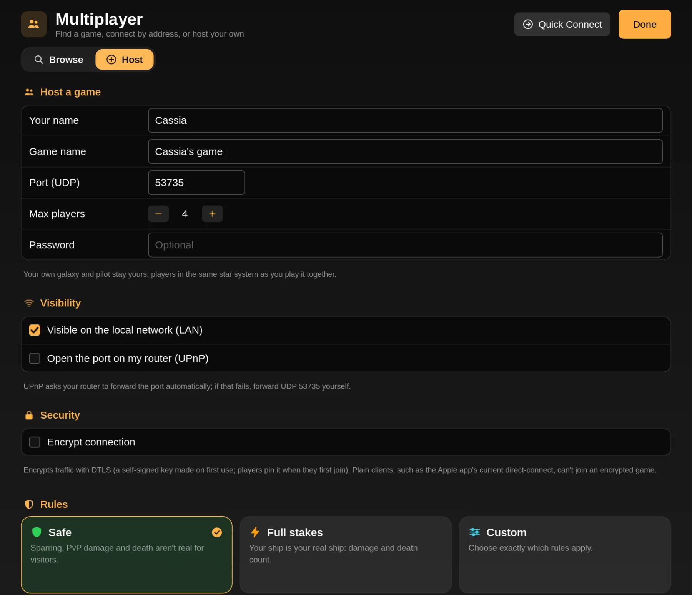

Fly the same stars as your friends.
Everyone keeps their own galaxy, pilot and story. Jump into the same system as a friend and you're playing together: escort them, fight beside them, or settle a score.
An overlay on your own game.
Multiplayer never replaces your save. You play your own galaxy exactly as in single player, and the people you're connected to appear on your map.
Apart: your own game
In different systems you each play on your own. Only a tiny "who's where" message travels, so friends show up on the galaxy map.
Together: one shared system
In the same system, everything syncs: ships, shots, AI, events. One of you runs that system and the others follow; if they leave, someone else takes over seamlessly.
Your story stays yours
Shipyards, outfitters, rank and pay use your own save. Story progress you earn together is added to yours, never taken away.
The host sets the stakes.
Safe is sparring: PvP damage and death aren't real, so nobody loses a ship to a friend. Full stakes makes everything count. Or pick custom rules one by one.
- PvP on or off
- Real damage
- Friendly fire
- Permadeath
- Player trading

Pick how you play.
| Connection | Apple app | Linux · Steam Deck · Windows | Notes |
|---|---|---|---|
| Internet with friends | Game Center | Direct address | Game Center needs no setup. On desktop, the host forwards one UDP port, or everyone uses Tailscale. |
| Same network | Local Wi-Fi | LAN browser | Games on your network appear on their own. |
| Public lobbies | Lobby list | Server browser | Apple lists open Game Center lobbies through iCloud. Desktop lists community servers. |
| Dedicated servers | Coming | Yes | Always-on servers run by players, with a web admin panel and no game data needed. Run your own. |
| Cross-play | In progress | Apple and desktop players on the same servers. See below. | |
Game Center, Wi-Fi and the lobby list
On Mac, iPhone, iPad and Apple TV, invite friends through Game Center or play over local Wi-Fi with nothing to set up. Hosts can choose to list their lobby publicly; other players see it in the lobby list and knock to join, and the host lets them in.
Apple runs the matchmaking and relays, so there's no server for anyone to pay for.
Browse, Quick Connect, Host
The multiplayer screen on Linux, Steam Deck and Windows puts your saved servers at the top of the browser, above games on your network and public servers, each with live ping and player counts. Quick Connect joins any address and can save it. Host opens your own game to friends.
It all works with a mouse, a keyboard or a gamepad.
Bring your mods.
Servers can run plug-ins, even total conversions. When you join, the game compares gameplay plug-ins (ships, weapons, missions, systems) and tells you exactly what to install, update or turn off. Art, sound and interface plug-ins are yours to keep or skip; they don't affect anyone else.
If the server uses plug-ins from the community catalog, you can install them and join in one step, and your own plug-in setup comes back when you leave.
Version-friendly. Joining checks the network protocol version, not the exact app version, so small updates don't lock you out of your friends' games.
Apple and desktop, together. Nearly.
Desktop builds use a different network transport than Game Center, so today Apple players and desktop players can't meet. The bridge is written: the Apple app's code has the same connection layer as the desktop builds, so it can browse the public server list, join dedicated servers and desktop hosts by address, and host them too. It isn't in a TestFlight build yet, and no Apple-to-desktop game has been played.
Shared protocol
The connection layer is implemented in the shared Swift code and tested against real desktop servers and a Godot client in loopback tests.
Apple server browser
Public, LAN and saved servers and Quick Connect in the Apple app, next to Game Center. Written, coming in a future TestFlight build.
Apple hosting
Letting a Mac or iPad host a game desktop players can join, by direct IP. Written, coming in a future TestFlight build.
Join & host guide
Step by step for every platform, plus fixes for connection errors.
Read the guideServer list
Public community servers with their address, region and rules.
Browse serversDedicated server
Run a server at home or on a VPS, and get it listed.
Host a serverBeta. Multiplayer is new and hasn't had much play on real networks yet. If something desyncs or won't connect, tell us with the diagnostics bundle from Report a Bug in Settings.